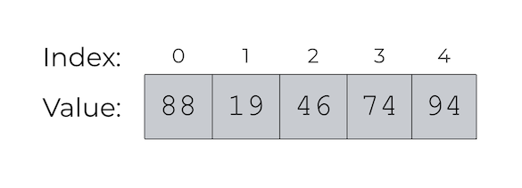
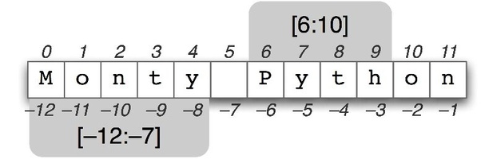
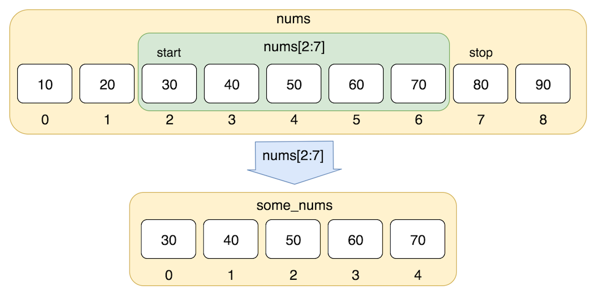

Why Python?¶
Python is a fantastic general-purpose programming language on its own, but with the help of a few popular libraries (numpy, scipy, matplotlib) it becomes a powerful environment for scientific computing. You may already know some Python and that’s great! For the rest of you, this section will serve as a quick crash course both on the Python programming language and on the use of Python for scientific computing. This module will cover everything we will need for this course.

Python is a high-level, dynamically-typed, multiparadigm programming language.
Python code is often said to be almost like pseudocode, since it allows you to express very powerful ideas in very few lines of code while being very readable. A few examples without explanations are below:
menu = ["pizza", "sushi", "taco"]
for item in menu:
print(item)
pizza
sushi
taco
menu = ["sushi", "123", "taco", "frog"]
for item in menu:
if item == "taco":
print("yum!")
else:
print("eww")
eww
eww
yum!
eww
While these are silly examples for illustration, with the same simplicity of code you can do fairly sophisticated calculations. Do not worry if some of these commands seem unfamiliar, we are going to explain them later on.
Python versions¶
There are older version of Python (Python 2.7) and newer versions (Python 3.9+). We will always use the latest version. If you have installed Python on your computer you can check your Python version at the command line by running python --version.
Comments¶
A “comment” is a part of code that is not run. It is a way to write notes about what your code is doing at certain points. This is helpful when you, or someone else, looks at the code later, so they know what it is doing. To make a comment in Python, precede the comment with a #.
# Comments can be on their own line like this
print("Hi")
print("World") # A comment can also be at the end of a line
Hi
World
Whitespace¶
In programming, white space refers to all of the space in your document that is not filled with code. Examples of whitespace are spaces, tabs (indents), and newlines (when you press enter and go to the next line). Python is very particular about white space and how you use it, specifically the use of indentations and newlines.
Newlines: Python uses newline characters to separate logical lines of code. A logical line of code consists of a “command” in code. It is considered good Python style, or Pythonic , to separate logical lines with newlines, although other methods exist.
Indentation: Tab characters, or indentation, are used to indicate code blocks in Python. These will be seen later in the tutorial with for loops, while loops, if statements, and other structures. For now, the take-home message is to follow the indentation pattern of the example and avoid unnecessary indentation.
print("Hello") # This is a logical line that assigns the value 16 to x
print("World") # This is another logical line, on the next line, that prints the value of x
Hello
World
print("Hello") # This line is not indented, so it is fine
print("World") # Unnecessary indentation, this code will not work
File "<ipython-input-5-3c37af9014f9>", line 2
print("World") # Unnecessary indentation, this code will not work
^
IndentationError: unexpected indent
Exercise: Remove unnecessary indentation in the broken code above and execute it again.
Basic data types¶
Python has a variety of data types for managing different kinds of data. Examples are:
numbers
strings
lists
dictionaries
sets
tuples
Some of these are point types such as simple numbers often used for basic arithmetic operations. Others are of container kind which contain sequences of numbers often used as vectors and matrices.
Numbers¶
Numbers are an important data type for us which we use to do all sorts of computations. It is important to know that the numbers in Python can be:
Integers: -2, -1, 0, 1, 2
Floats: -0.001, 4.56, 3.14
Complex numbers: 1.2+2.5j, 2j, 3+1j
Let us begin creating some numeric data and assigning variable names:
x = 3 # variable called x
print(x) # print contents of x
3
x # Works the same for single line but for multiple lines you need print. See below
3
print(x + 18) # Addition
print(x - 1) # Subtraction
print(x * 2) # Multiplication
print(x ** 2) # Exponentiation
21
2
6
9
x=2.3
type(x) #let's find out what kind of number is this
float
Exercise: change the number type to float and complex number and execute the above cells again
x, y, z = 1, 2, 5 # multiple assignments can be done with one line!
print(x)
print(y)
print(z)
1
2
5
x + y, x * z # Multiple operations can be done with one line also, separated by a comma!
(3, 5)
Complex numbers are handled just as easily¶
z1 = 10+2j
z2 = 3-1j
# extract real and imaginary parts as well as the conjugate
z1.real, z1.imag, z1.conjugate()
(10.0, 2.0, (10-2j))
z1_abs = z1 * z1.conjugate()
print(z1_abs)
(104+0j)
z1_abs**0.5
(10.198039027185569+0j)
Booleans¶
Booleans are key type in any computer language they allow determining true or false statements and constructing logical set of operations
x=True
y=False
z=True
x == z # == (equals), != (not equal), > (greater than), < (less than) comparison operators and return True or False.
False
y=2.3
y>2
True
y<2
False
y==2.3
True
y!=-234
True
Strings¶
hello = 'hello' # String literals can use single quotes
x = "world blah blah" # or double quotes; it does not matter.
type(x)
str
world = 'world'
hw = hello + ' ' + world # String concatenation with the + operator
print(hw) # prints "hello world"
hello world
String objects have a bunch of useful methods; for example:
s = "hello"
print(s.capitalize()) # Capitalize a string; prints "Hello"
print(s.upper()) # Convert a string to uppercase; prints "HELLO"
print(s.rjust(7)) # Right-justify a string, padding with spaces; prints " hello"
print(s.center(7)) # Center a string, padding with spaces; prints " hello "
print(s.replace('l', '(ell)')) # Replace all instances of one substring with another;
# prints "he(ell)(ell)o"
print(' world '.strip()) # Strip leading and trailing whitespace; prints "world"
Hello
HELLO
hello
hello
he(ell)(ell)o
world
Containers¶
Python includes several built-in container types: lists, dictionaries, sets, and tuples. Lists will be the most useful for our objectives in this course so we only cover lists.
Strings, lists and tuples are sequences. They can be indexed and sliced in the same way.
Tuples and strings are “immutable” (which basically means we can’t change individual elements within the tuple, and we cannot change individual characters within a string) whereas lists are “mutable” (.i.e we can change elements in a list.)
Sequences share the following operations
a[i]returns i-th element ofaa[i:j]returns elements i up to j-1len(a)returns number of elements in sequencemin(a)returns smallest value in sequencemax(a)returns largest value in sequencex in areturnsTrueifxis element inaa + bconcatenatesaandbn * acreatesncopies of sequencea
Lists¶

A list is a generic container for holding any Python type, be it a string, numbers, other lists, or a mix of everything.
xs = [3, 1, 2,5,6,'blah'] # Create a list
print(xs[4])
6
xs[2] = 'foo' # Lists can contain elements of different types
print(xs)
[3, 1, 'foo', 5, 6, 'blah']
xs.append(145) # Add a new element to the end of the list
print(xs)
[3, 1, 'foo', 5, 6, 'blah', 145]
#x = xs.pop() # Remove and return the last element of the list
#print(x, xs)
#help(x)
As usual, you can find all the gory details about lists in the documentation.
Slicing¶
In addition to accessing list elements one at a time, Python provides concise syntax to access sublists; this is known as slicing:

nums = range(0,55,3) # range(i,j,k) is a built-in function that creates a list of integers from i to j with a stride k
nums = list(nums) # make a list
print(nums)
nums[0:3]
[0, 3, 6, 9, 12, 15, 18, 21, 24, 27, 30, 33, 36, 39, 42, 45, 48, 51, 54]
[0, 3, 6]

Loops¶
Loops alow you to go over the elements of containers and act on them given specific instructions. You can loop over the elements of a list like this:
animals = ['cat', 'dog', 'monkey', 'lion']
for animal in animals:
print(animal)
cat
dog
monkey
lion
List comprehensions:¶
When programming, frequently we want to transform one type of data into another. As a simple example, consider the following code that computes square numbers:
nums = [0, 1, 2, 3, 4,5]
squares = []
for x in nums:
squares.append(x ** 3)
squares
[0, 1, 8, 27, 64, 125]
You can make this code simpler using a special trick of lists called list comprehension:
nums = [0, 1, 2, 3, 4, 5]
squares = [5*x + x ** 2 for x in nums] # This is a list comprehension
squares
[0, 6, 14, 24, 36, 50]
List comprehensions can also contain conditions:
nums = [0, 1, 2, 3, 4]
even_squares = [x ** 2 for x in nums if x % 2 == 0]
even_squares
[0, 4, 16]
The range() command¶
A special type of list is frequently required (often together with for-loops) and therefor a command exists to generate that list: the range(n) command generates integers starting from 0 and going up to but not including n. Here are a few examples:
list(range(3))
[0, 1, 2]
list(range(10))
[0, 1, 2, 3, 4, 5, 6, 7, 8, 9]
This command is often used with for loops. For example, to print the numbers 02,12,22,32,…,102, the following program can be used:
for i in range(11):
print(i ** 2)
0
1
4
9
16
25
36
49
64
81
100
The range command takes an optional parameter for the beginning of the integer sequence (start) and another optional parameter for the step size. This is often written as range([start],stop,[step]) where the arguments in square brackets (i.e. start and step) are optional. Here are some examples:
list(range(3, 10))
[3, 4, 5, 6, 7, 8, 9]
list(range(3, 10, 2))
[3, 5, 7, 9]
Why are we calling list(range())?
In Python 3, range() generates the numbers on demand. When you use range() in a for loop, this is more efficient, because it doesn’t take up memory with a list of numbers. Passing it to list() forces it to generate all of its numbers, so we can see what it does.
To get the same efficient behaviour in Python 2, use xrange() instead of range().
Control Flow and the if-then-else statement¶
The if statement allows you to execute a block of code optionally, if certain conditions are met. An expression which evaluates to True or False, called the conditional statement, must be in the parentheses following the if keyword.
x = 5
if( x + 3 > 11):
print("I entered the conditional block!")
print("I am also part of the conditional block.")
print('''Since I am not indented, I am not in the
conditional block and execute every time.''')
Since I am not indented, I am not in the
conditional block and execute every time.
The if statement can be followed with optional blocks of code that will be executed if another condition, or no condition, is met. The default code block when no condition is met is an else statement. Each if statement can also be followed by zero or more elif statements. These are used to chain together if statements with different conditions. Try changing x to trigger the different conditions below.
x = 9
if( x == 9):
print("x equals 9")
elif(x < 9):
print("x is less than 9")
elif(x > 9 and x < 20):
print("x is between 9 and 20")
else:
print("x is greater than 20")
x equals 9
While loop
The while keyword allows to repeat an operation while a condition is true. Suppose we’d like to know for how many years we have to keep 100 pounds on a savings account to reach 200 pounds simply due to annual payment of interest at a rate of 5%. Here is a program to compute that this will take 15 years:
mymoney = 100 # in GBP
rate = 1.05 # 5% interest
years = 0
while mymoney < 200: # repeat until 20 pounds reached
mymoney = mymoney * rate
years = years + 1
print('We need', years, 'years to reach', mymoney, 'pounds.')
We need 15 years to reach 207.89281794113688 pounds.
Dictionaries¶
Dictionaries are also called “associative arrays” and “hash tables”. Dictionaries are unordered sets of key-value pairs.
An empty dictionary can be created using curly braces:
d = {}
d['today'] = '22 deg C' # 'today' is the keyword
d['yesterday'] = '19 deg C'
d.keys() returns a list of all keys:
We can retrieve values by using the keyword as the index:
d['today']
Other ways of populating a dictionary if the data is known at creation time are:
d2 = {2:4, 3:9, 4:16, 5:25}
d2
{2: 4, 3: 9, 4: 16, 5: 25}
d3 = dict(a=1, b=2, c=3)
d3
{'a': 1, 'b': 2, 'c': 3}
The function dict() creates an empty dictionary.
Other useful dictionary methods include values(), items() and get(). You can use in to check for the presence of values.
d.values()
dict_values(['22 deg C', '19 deg C'])
d.items()
dict_items([('today', '22 deg C'), ('yesterday', '19 deg C')])
The method get(key,default) will provide the value for a given key if that key exists, otherwise it will return the default object.
Here is a more complex example:
d.get('today','unknown')
'22 deg C'
d.get('tomorrow','unknown')
'unknown'
'today' in d
True
'tomorrow' in d
False
Some more technicalities:
The keyword can be any (immutable) Python object. This includes:
numbers
strings
tuples.
dictionaries are very fast in retrieving values (when given the key)
An other example to demonstrate an advantage of using dictionaries over pairs of lists:
order = {} # create empty dictionary
#add orders as they come in
order['Peter'] = 'Pint of bitter'
order['Paul'] = 'Half pint of Hoegarden'
order['Mary'] = 'Gin Tonic'
#deliver order at bar
for person in order.keys():
print(person, "requests", order[person])
Without dictionary:
people = ["Hans","Andy C","Ken"]
rooms = ["room 1033","room 1031","room 1027"]
#possible inconsistency here since we have two lists
if not len( people ) == len( rooms ):
raise RuntimeError("people and rooms differ in length")
for i in range( len( rooms ) ):
print(people[i],"works in",rooms[i])
Functions¶
Python functions are defined using the def keyword. For example let us write a polynomial function
def sq_func(x): # defined function of variable x
'''INPUT: x number
OUTPUT: f(x) number'''
return 3.0*x**3 + x**2 + 10*x+1.0
sq_func(3)
121.0
def add_trig2(x, y): # defined function of variable x and y
return np.sin(x)**2 + np.cos(y)**2
add_trig2(4, 4)
1.0
Exercise
Write a function that summs numbers in 1D and 2D arrays.
Write a function that take M argument generates M by M shaped 2D array filled with random numbers then visualizes it as an image.
Anonymous functions¶
Sometimes we need to quickly define a function wihtout giving it pet names. This can be accomplished by anonymous lambda function definition
f = lambda x: 3.0*x**3 + x**2 + 10*x+1.0
print(f(4))
249.0
This anonoymitiy may be hady of we want to pass some function to integration or differneitation operations
from scipy.integrate import quad
quad(lambda x: 3.0*x**3 + x**2 + 10*x+1.0, 0, 1)
(7.083333333333334, 7.864079757761526e-14)
quad(sq_func, 0, 1)
(7.083333333333334, 7.864079757761526e-14)
Positional and optional arguments¶
Sometimes we like to specify default values for funciton variables. E.g in science context this will be physical parameters, like the stiffness constant and quilibrium length of a spring. Note that the positional argument must always come first followed by any number of optional arguments.
def harm_osc(x, k=1,x0=0):
return k*(x-x0)**2
print(harm_osc(2))
print(harm_osc(2,10))
print(harm_osc(2,k=10))
print(harm_osc(2,k=10,x0=0.5))
4
40
40
22.5
Exercises¶
Exercise-1
Predict and explain the following statements
9 + 6j / 2
complex(4, 5).conjugate().imag
complex(0, 3j)
round(2.5)
round(-2.5)
abs(complex(5, -4)) == math.hypot(4,5)
Exercise-2
Predict and explain the following statements
not 1 < 2 or 4 > 2
not (1 < 2 or 4 > 2)
1 < 2 or 4 > 2
4 > 2 or 10/0 == 0
not 0 < 1
1 and 2
0 and 1
1 or 0
type(complex(2, 3).real) is int
Exercise-3
Slice the string s = ‘seehemewe’ to produce the following substrings:
‘see’
‘he’
‘me’
‘we’
‘hem’
‘meh’
‘wee’
Exercise-4
Predict the results of the following statements:
days = ‘Sun Mon Tues Weds Thurs Fri Sat’
print(days[days.index(‘M’):])
print(days[days.index(‘M’): days.index(‘Sa’)]. rstrip ())
print(days [6:3: -1]. lower ()*3)
print(days.replace(‘rs’, ‘’). replace(‘s ‘, ‘ ‘)[::4])
print(‘ -*- ‘.join(days.split ()))
Exercise-5
Predict and explain the outcome of the following statements using the variables s = ‘hello’ and a = [4, 10, 2].
print(s, sep=’-‘)
print(*s, sep=’-‘)
print(a)
print(*a, sep=’’)
list(range(*a))
Problems¶
Problem-1: Core data types of python
Acess and pring the length as well as first, middle and last letters of the string
dna_string = "ACGCAGG"Create two lists
x=[1,2,4,"dog", "xy"]andy =[3,4,5,"cat", "a"]and dox+y.XY=x[:3]+y[:3]. Comment on whyXYlooks the way it looks. Any other way to achieve same result?Create two numpy arrays
a=np.array([1,2,3])andb=np.array(10,10,10). The doa+b,a*banda@b. Comment what happensCreate two string variables
s1="I am"ands2=" Python Ninja"(notice the space). First do s1+sw and comment. Next Capitalize every other element in the string.Loop over items in lists in 1 by prining the numbers only.
Create two string variables by typing
mol1 = "CH3"andmol2= "CH2". Using only these two strings and arithmetic operations on strings (+ and/or multiply *) create a third variable that would represent molecule of octane.Create two arrays \(A=x^3\) and \(B=3x^2+1\) by generating array of numbers using linspace method between points 1 and 10 divided into 1000 parts.
Compute dot product between A and B
plot A vs B, plot A vs array of integers 1,2,3… of same length as A. Do the same for B
Select right half elements of A using slicing and set them to 0. plot A via
plt.plot(A)to verify.
Problem-2: Polynomials
Step-1 Compute the value of the polynomial \(y=ax^n+bx^3+c\)
at \(x=−2\), \(x=0\), and \(x=2.1\) by using \(n=1\), \(b=1\), \(c=-6\) as parameters.
Print the results to the screen.Step-2 plot the polynomial as a function of x with given parameters
Step-3 Make a function
plot_polynom(x,n=1,a=1,b=1,c=1)that plots polynomials. Make several plots for different values of power n.
Problem-3: Computational with Binomial coefficients
Step-1 Write a function that computes binomial coefficients given n and k as input. You can consult Wikipedia
def C(n,k):
return```
- Step-2 Compare your function with binom function from of scipy. Do help(binom) to learn more
```python
from scipy.special import binom```
- Step-3 Make several plots of binomial coefficients C(n,k) as a function of k values for different fixed n.
E.g n =2 n= 8 n=16 n=23 n=64
```python
plt.plot(k, C(16,k), '-o')```
Problem-4: DNA sequence
Given a string representing a base-pair sequence (i.e. containing only the letters A, G, C and T), determine the fraction of G and C bases in the sequence. (Hint: strings have a count method, returning the number of occurrences of a substring.)
Using only string methods, devise a way to determine if a nucleotide sequence is a palindrome in the sense that it is equal to its own complementary sequence read backward. For example, the sequence TGGATCCA is palindromic because its complement is ACCTAGGT, which is the same as the original sequence backward. The complementary base pairs are (A, T) and (C, G).
Problem-5: Credit Card fraud
The Luhn algorithm is a simple checksum formula used to validate credit card and bank account numbers. It is designed to prevent common errors in transcribing the number, and detects all single-digit errors and almost all transpositions of two adjacent digits. The algorithm may be written as the following steps.
1. Reverse the number.
2. Treating the number as an array of digits, take the even-indexed digits (where the indexes start at 1 ) and double their values. If a doubled digit results in a number greater than 10, add the two digits (e.g., the digit 6 becomes 12 and hence 1 + 2 = 3).
3. Sum this modified array.
4. If the sum of the array modulo 10 is 0 the credit card number is valid.
Write a Python program to take a credit card number as a string of digits (possibly in groups, separated by spaces) and establish if it is valid or not. For example, the string ’4799 2739 8713 6272’ is a valid credit card number, but any number with a single digit in this string changed is not.
Catch a bug
A Harshad number is an integer that is divisible by the sum of its digits (e.g., 21 is divisible by 2 + 1 = 3 and so is a Harshad number). Correct the following code which should return True or False if n is a Harshad number or not respectively. The code when run on some number is_harshad(21) gives error. Find the error and fix it.
def digit_sum(n):
""" Find the sum of the digits of integer n. """
s_digits = list(str(n)) dsum = 0
for s_digit in s_digits:
dsum += int(s_digit)
def is_harshad(n):
return not n % digit_sum(n)